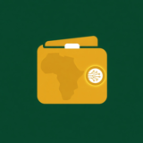

L'argent digital en Afrique, expliqué simplement. Mobile money, crypto, néobanques, transferts d'argent : des Shorts et des vidéos pour comprendre, comparer et éviter les arnaques.
YouTube : @lewalletafricain
Content Bot est l'outil interne de la chaîne Le Wallet Africain. Il aide à préparer des vidéos éducatives (rédaction du script, voix, montage) et, après validation manuelle par l'éditeur, à les mettre en ligne sur la chaîne YouTube Le Wallet Africain via l'API YouTube Data. L'application n'est utilisée que par l'éditeur de la chaîne, pour sa propre chaîne ; elle ne collecte aucune donnée d'autres utilisateurs.
Détails sur les données utilisées : Règles de confidentialité.
Contenu éducatif, pas un conseil financier. Fais toujours tes propres recherches.